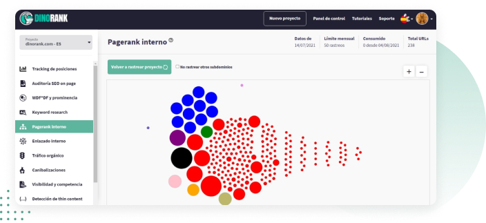
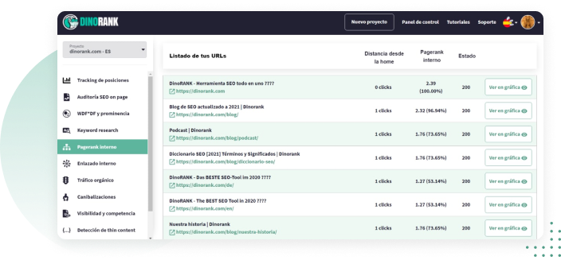

Distribuye la fuerza hacia las URLs más importantes de tu web, mejora su ranking y vende más

Muchas veces pasa.
Trabajas distintas técnicas de SEO, pero tu web no acaba de rankear bien y no te da el dinero que esperabas.
Pagerank interno es la transmisión de la autoridad, o de la fuerza, de un enlace a otro.
No gestionar bien el pagerank interno de una página web es un error muy común y que afecta directamente al rendimiento que esperas tú (o tu cliente) de ese proyecto digital.
De hecho, saber trabajarlo es una de las técnicas SEO que más beneficios genera:
Aumenta el tráfico a la URL que te interesa
Mejora la intención de búsqueda del usuario
Google te ve con mejores ojos
Incrementa tus ventas
La función Pagerank Interno aporta más fuerza y autoridad a las URLs más relevantes o que más cueste posicionar

Esto es lo que te ofrece:
Búsqueda por país
Fácil de usar
Informes descargables
Cómo funciona Pagerank Interno
Selecciona el proyecto sobre el que quieras trabajar y haz clic en Pagerank Interno.
Aparece un gráfico de bolitas. En él puedes ver y entender de forma muy visual cómo se está trasmitiendo la fuerza SEO o link juice, de unos enlaces a otros de tu página web.

La bola negra es la home, que es de la que derivan el resto de URLs.
Cuanto más grande es una bola, más fuerza tiene.
Los colores indican las que están agrupadas o enlazadas.
Si sitúas el cursor sobre una bola, puedes ver:
La URL
El pagerank
Su distancia a la home
Si la URL que quieres trabajar está a 1 clic de la home, toda la fuerza de la home pasa de forma directa a esa URL.
De forma que, a más clics esté un enlace de la home, más se va diluyendo la fuerza SEO.
Y este link juice, también depende de los enlaces que esté recibiendo esa URL.
En este gráfico de bolas, puedes ver también si el reparto de fuerza entre las URLs de tu web está equilibrado o no.
Listado de todas las URLs

En este listado puedes ver distintos datos para mejorar el Pagerank Interno de tu sitio web:
-
La distancia a la que se encuentran esas URLs desde la home, su pagerank interno y su estado (200 o 3xx).
-
Pinchando puedes ver el gráfico de cada URL.
-
Si haces clic en él, Dinorank te lleva a la función de enlazado interno que es la que se complementa con pagerank interno.
-
Aquí ves las URLs que apuntan hacia ella y así puedes entender cómo está funcionando el enlazado interno y la forma en la que se transmite la fuerza.
-
Debajo aparece el detalle de todo el enlazado interno (lo puedes ver más detallado en la página de Enlazado Interno).
Con todos estos datos puedes elegir cómo transmitir la fuerza, cómo hacer la estructura de enlazado interno de tu página web.
-
Este trabajo es importante hacerlo de forma cuidadosa, con sentido y naturalidad para aportar valor al usuario, respondiendo a su intención de búsqueda y mostrándole a Google cómo están relacionados tus contenidos.
-
Puedes ver si hay demasiados enlaces y si conviene hacer agrupaciones por clúster o por temáticas, para ofrecer una estructura más ordenada a Google y a tu usuario.
-
Y también entenderás por qué unas URLs reciben más tráfico que otras.
-
A través de estos gráficos puedes saber de un solo vistazo, cuál es el problema con la transmisión de fuerza entre las URLs de tu página web.
Haciendo link sculpting, vas esculpiendo la arquitectura web de tu página y poco a poco conseguirás alterar la relevancia de esa URL en base a la fuerza que va recibiendo.
Alterar la fuerza de una URL con el Pagerank Interno es vital para que Google sepa cuáles son las partes más importantes de tu site.
Trabaja la transmisión de autoridad y aumenta las posibilidades de posicionar el contenido que más te interese de tu página web.
Testimonios de usuarios de DinoRANK
Opiniones de clientes que usan DinoRANK en su día a día para mejorar su visibilidad.
Es imposible hacer SEO sin los datos que DinoRank proporciona.
Ha optimizado mucho nuestro trabajo en la agencia, tanto a la hora de hacer SEO on Page, como para ver el progreso de nuestros clientes y el rendimiento de cada recurso.
La mayor ventaja es poder ver todos los problemas de una página con un sencillo análisis. También nos ayuda a hacer seguimiento del posicionamiento de las palabras clave y a conocer con detalle el CPC y la competencia de cada palabra clave.

María Ponsada
CEO Seoriginalsweb.com
La gran virtud de DinoRANK es que es una herramienta SEO muy económica pero también muy completa.
Cuando inicias un proyecto intentas contener los gastos usando mil y una herramientas gratuitas para analizar las métricas de tu web. Con DinoRANK, no tengo que saltar de herramienta en herramienta.
Su Keyword research ha cambiado mi manera de afrontar la redacción de los posts. La cantidad de palabras clave derivadas y la rapidez con las que se logran, me enamoró desde el primer momento.
La funcionalidad que más me ha sorprendido es el Tracking de posiciones. Es muy útil para controlar la evolución de mis keywords y ver cómo reacciona la competencia.

Francisco Marhuenda Sala
Webmaster laguíadelchollo.com
Es imposible hacer SEO sin los datos que DinoRank proporciona.
Ha optimizado mucho nuestro trabajo en la agencia, tanto a la hora de hacer SEO on Page, como para ver el progreso de nuestros clientes y el rendimiento de cada recurso.
La mayor ventaja es poder ver todos los problemas de una página con un sencillo análisis. También nos ayuda a hacer seguimiento del posicionamiento de las palabras clave y a conocer con detalle el CPC y la competencia de cada palabra clave.
María Ponsada
CEO Seoriginalsweb.com
Mi proyecto ha crecido en tráfico, autoridad y posicionamiento en palabras clave superimportantes para mi negocio. A pesar de haber trabajado con otras, la magia de WDF*DF y prominencia para saber, en un solo vistazo, lo que deben tener mis artículos a nivel de estructura es brutal y no necesito tener profundos conocimientos SEO.
Al principio dudé por ser menos conocida que Semrush o Ahrefs pero he conseguido rankear en los primeros lugares de Google para KW con intencionalidades de búsqueda muy competidas.
DinoRANK es intuitiva. Te dice en un solo vistazo la estructura que deberían tener tus artículos para posicionar por encima de la competencia.
Gracias a DinoRANK, he aprendido a distribuir el PageRank y los niveles de clicks para dar fuerza a las partes que más me interesan de mi página web. Antes no sabía lo importante que es la distribución de un buen interlinking dentro de mis proyectos.
Reviso continuamente el tracking de posiciones para ver como aumenta la visibilidad de mi web gracias al balance de mejora que he implementado con esta Suite. He aumentado el posicionamiento de mi página web para las palabras clave más fuertes y más importantes de mis proyectos.
DinoRANK me ha ayudado de forma muy visual e intuitiva a desarrollar una mejora del SEO On Page de mi web, a enriquecer los textos gracias al estudio de la competencia y hacer una auditoría de 0 a 100 que nada tiene que envidiar a Crawlers y/o herramientas SEO de precios bastante más elevados.

Sergio Cordero
sergiocordero.net
Mi proyecto ha crecido en tráfico, autoridad y posicionamiento en palabras clave superimportantes para mi negocio. A pesar de haber trabajado con otras, la magia de WDF*DF y prominencia para saber, en un solo vistazo, lo que deben tener mis artículos a nivel de estructura es brutal y no necesito tener profundos conocimientos SEO.
Al principio dudé por ser menos conocida que Semrush o Ahrefs pero he conseguido rankear en los primeros lugares de Google para KW con intencionalidades de búsqueda muy competidas.
DinoRANK es intuitiva. Te dice en un solo vistazo la estructura que deberían tener tus artículos para posicionar por encima de la competencia.
La gran virtud de DinoRANK es que es una herramienta SEO muy económica pero también muy completa.
Cuando inicias un proyecto intentas contener los gastos usando mil y una herramientas gratuitas para analizar las métricas de tu web. Con DinoRANK, no tengo que saltar de herramienta en herramienta.
Su Keyword research ha cambiado mi manera de afrontar la redacción de los posts. La cantidad de palabras clave derivadas y la rapidez con las que se logran, me enamoró desde el primer momento.
La funcionalidad que más me ha sorprendido es el Tracking de posiciones. Es muy útil para controlar la evolución de mis keywords y ver cómo reacciona la competencia.
Francisco Marhuenda Sala
Webmaster laguíadelchollo.com
Tengo varios proyectos, y me ha sido muchísimo más fácil encontrar nuevas keywords para posicionar y saber por las que ya estaba posicionando.
Hago keyword research para mis proyectos y de mis clientas casi a diario. La auditoría la uso muchísimo tanto para posibles clientes, como para controlar mis proyectos. Y la función de visibilidad es genial. Poder ver keywords de otras webs sin tener acceso a su search console. Mi web principal está subiendo visitas y me estoy posicionando en keywords muy interesantes. He comenzado un proyecto poco y ya está consiguiendo tráfico orgánico interesante, sin haber invertido en linkbuilding, solo con optimización de contenidos.
Con DinoRANK es muy fácil hacer keyword research, la auditoría completa del sitio y la visibilidad.
Tengo varios proyectos, y me ha sido muchísimo más fácil encontrar nuevas keywords para posicionar y saber por las que ya estaba posicionando.
Hago keyword research para mis proyectos y de mis clientas casi a diario. La auditoría la uso muchísimo tanto para posibles clientes, como para controlar mis proyectos. Y la función de visibilidad es genial. Poder ver keywords de otras webs sin tener acceso a su search console. Mi web principal está subiendo visitas y me estoy posicionando en keywords muy interesantes. He comenzado un proyecto poco y ya está consiguiendo tráfico orgánico interesante, sin haber invertido en linkbuilding, solo con optimización de contenidos.
Con DinoRANK es muy fácil hacer keyword research, la auditoría completa del sitio y la visibilidad.
Probé DinoRANK para 3 de mis páginas web, dos de ellas son nichos y una, mi proyecto principal.
No esperaba que por ese precio me diera tanto. Al principio dudé de si sería buena, pero tras probar Semrush, Ahrefs, Ubersuggest, ninguna me ha enamorado como Dinorank.
La uso a diario para hacer seguimiento de las keywords. La función de prominencia semántica ha sido un gran sorpresa, me ha permitido escalar posiciones muy rápido y me ha generado un incremento en los ingresos de la WEB.
Ver a golpe de click toda la estructura y fuerza interna de la página, poder realizar de manera sencilla una auditoría de SEO on Page o detectar canibalizaciones... me parece brutal.
Además, es la primera suite SEO todo en uno que he probado que te hace sentir en su comunidad y partícipe del proyecto, y lo valoro mucho.
Probé un mes y tengo claro que ya no me voy de Dinorank. Es una herramienta sencilla, completa, a bajo coste y que te hace llevar tu proyecto a dónde quieras, facilitándote la vida.
Gracias a DinoRANK, he aprendido a distribuir el PageRank y los niveles de clicks para dar fuerza a las partes que más me interesan de mi página web. Antes no sabía lo importante que es la distribución de un buen interlinking dentro de mis proyectos.
Reviso continuamente el tracking de posiciones para ver como aumenta la visibilidad de mi web gracias al balance de mejora que he implementado con esta Suite. He aumentado el posicionamiento de mi página web para las palabras clave más fuertes y más importantes de mis proyectos.
DinoRANK me ha ayudado de forma muy visual e intuitiva a desarrollar una mejora del SEO On Page de mi web, a enriquecer los textos gracias al estudio de la competencia y hacer una auditoría de 0 a 100 que nada tiene que envidiar a Crawlers y/o herramientas SEO de precios bastante más elevados.
Sergio Cordero
sergiocordero.net
Probé DinoRANK para 3 de mis páginas web, dos de ellas son nichos y una, mi proyecto principal.
No esperaba que por ese precio me diera tanto. Al principio dudé de si sería buena, pero tras probar Semrush, Ahrefs, Ubersuggest, ninguna me ha enamorado como Dinorank.
La uso a diario para hacer seguimiento de las keywords. La función de prominencia semántica ha sido un gran sorpresa, me ha permitido escalar posiciones muy rápido y me ha generado un incremento en los ingresos de la WEB.
Ver a golpe de click toda la estructura y fuerza interna de la página, poder realizar de manera sencilla una auditoría de SEO on Page o detectar canibalizaciones... me parece brutal.
Además, es la primera suite SEO todo en uno que he probado que te hace sentir en su comunidad y partícipe del proyecto, y lo valoro mucho.
Probé un mes y tengo claro que ya no me voy de Dinorank. Es una herramienta sencilla, completa, a bajo coste y que te hace llevar tu proyecto a dónde quieras, facilitándote la vida.
Suscríbete a DinoRANK por 19,90 € al mes, precio/año.
También puedes suscribirte meses sueltos por 25 € al mes.